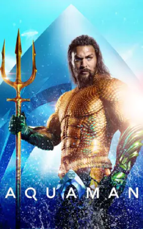
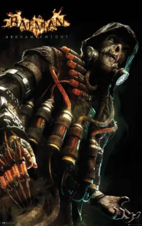
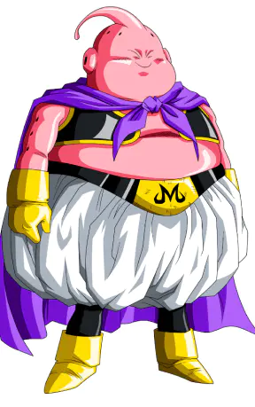
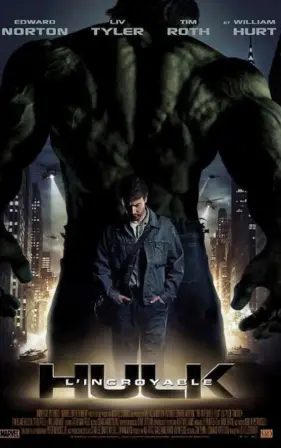
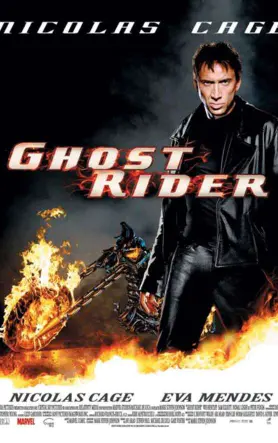
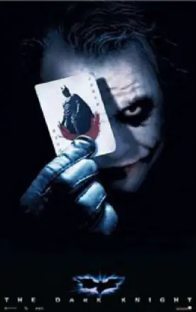
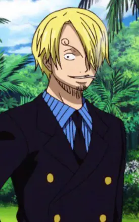

Autres projets
Si vous êtes arrivé sur cette page, c’est que vous vous sentez concerné par l’environnement. Apprenez comment ces super-héros polluent la planète !
Introduction
Ce site fait partie du projet de S1 de la première année du MMI Montbéliard. Vous pouvez retrouver les autres projets sur différents super-héros qui soulèvent un problème écologique.

Projets Iron-Man
Iron-Man et la pollution del’espace - Joseph McDONOUGH
The Bad Metal Man - ZéphirCHARLY
Projets Aquaman
Aquatic Pollution - ThéoVUILLIEN
Atlantis - Léa MESSERLIN
©iTunes - Apple
Projet Epouvantail
Phytophobia - Thibaud BARRAND
©Amazon
Projet Boo
Fake Food - Ambre GEISS
©Dragon Ball Wiki - Fandom
Projet Hulk
Hulk Industries - Aloïs BOLOU
©Cdiscount.com
Projet Ghost Rider
The skull who burns the world - Thibault MOEBEL
©Cdiscount.com
Projet Joker
Le Joker et son gaz polluant -Baptiste BERTHIER
Projet Sanji
Le plastique, une idée fumante - Benjamin BEY
©Anime-Planet
Projet Guts
Rage against the nature - Lucas BAILLY
©Berserk Fan Art source - Instagram
Projet Super Mario
Super Mario, The Water Waster - Elmir GEROVIC
©IGN.com
Projet Obélix
Le Gaulois - Matthieu MUCCIO
©Otakia